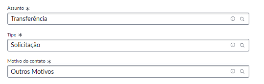

Outros motivos
A tabulação Outros Motivos deve ser utilizada quando o motivo da solicitação não se enquadrar em nenhuma das tabulações existentes. Trata-se de uma tabulação em aberto, utilizada também para identificar possíveis necessidades de criação de novas tabulações.
Se sinta livre para sugerir novas tabulações para transferência
Como abrir a solicitação
